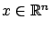

Next: 6.1.1 Candidate optimal feedback
Up: 6. The Linear Quadratic
Previous: 6. The Linear Quadratic
Contents
Index
6.1 Finite-horizon LQR problem
In this chapter we will focus on the special case when the system dynamics are linear and the cost is quadratic. While this additional structure certainly makes the optimal control problem more tractable, our goal is not merely to specialize our earlier results to this simpler setting. Rather, we want to go further and develop a more complete understanding of optimal solutions compared with what we were able to achieve for the general scenarios treated in the previous chapters.
(We could have followed a different path in our studies and started with this specific problem class before tackling more difficult problems. From the pedagogical point of view, each approach has its own merits. Historically, however, the general nonlinear results--having their origins in calculus of variations--appeared first.)
The (finite-horizon) Linear Quadratic Regulator (LQR) problem
is the optimal control problem from Section 3.3 with
the following additional assumptions: the control system is a linear time-varying system
 |
(6.1) |
with

and
 (the
control is unconstrained); the target set is
(the
control is unconstrained); the target set is
 , where
, where  is a fixed time
(so this is a fixed-time, free-endpoint problem); and the cost functional is
is a fixed time
(so this is a fixed-time, free-endpoint problem); and the cost functional is
 |
(6.2) |
where  ,
,  ,
,
 are matrices of appropriate dimensions satisfying
are matrices of appropriate dimensions satisfying
 (symmetric positive semidefinite),
(symmetric positive semidefinite),
 (symmetric positive semidefinite), and
(symmetric positive semidefinite), and
 (symmetric positive definite)
for all
(symmetric positive definite)
for all
![$ t\in[t_0,t_1]$](img949.gif) . The quadratic cost (6.2) is very reasonable: since both
. The quadratic cost (6.2) is very reasonable: since both  and
and  are positive (semi)definite, it penalizes both the size of the state and the control effort, with
and
determining their relative weights. Incidentally, the formula
are positive (semi)definite, it penalizes both the size of the state and the control effort, with
and
determining their relative weights. Incidentally, the formula
 for the running cost is another justification of the acronym LQR. We require
to be strictly positive definite because we will soon need its inverse. Additional assumptions will be introduced later as necessary. More general target sets can also be considered.
for the running cost is another justification of the acronym LQR. We require
to be strictly positive definite because we will soon need its inverse. Additional assumptions will be introduced later as necessary. More general target sets can also be considered.
Subsections
Next: 6.1.1 Candidate optimal feedback
Up: 6. The Linear Quadratic
Previous: 6. The Linear Quadratic
Contents
Index
Daniel
2010-12-20